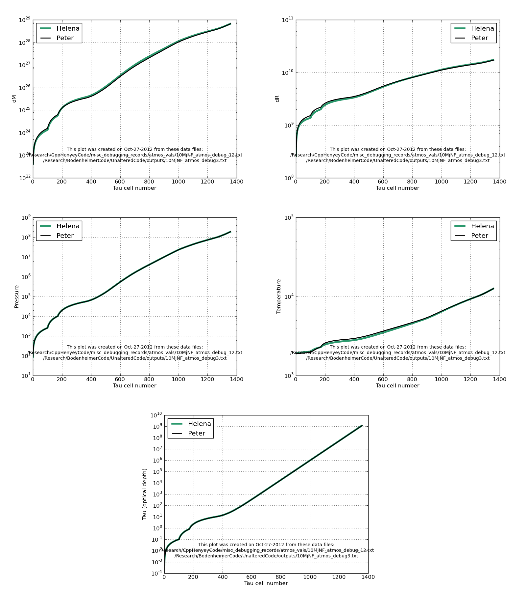

Date & Time: Oct. 27, 2012
Location: campus
Computing context: MachoMac
(/Desktop/Research/CppHenyeyCode/src, /Desktop/Research/BodenheimerCode/UnalteredCode)
From last time:
Figured out why the results from Peter's atmos code had seemingly changed (going from 967 cells to 1358 for no apparent reason). It's the dTAUmx factor in his code. Since I'm (now) calling the atmos subroutine before the dTAUmx factor gets re-set in the code to = (dTAX * taukj), the maximum dTau allowed in the atmospheric calcs is smaller, and so it ends up having to take more, and smaller, steps in tau in order to get to the end of the atmosphere.
Once I figured that out (dTAUmx now = 1e-6 in Peter's code), I changed the corresponding conditions in the if/then statements in Helena's atmos code that determine the size of the next loop's dTau value. Now, when I force Helena's atmos subroutine to make the same number of dTau steps as Peter's code does (1358), it produces atmospheric profiles that are decently similar to Peter's results. (See Figures 1 and 2, which summarize the results. The atmos profiles are still not absolutely identical, though.)
Will Helena's atmos subroutine still produce 'correct'-ish atmos profiles when I change the RK4 loop conditions back to the do-while-mass-is-less-than-some-amount criterion, rather than forcing it to take the same number of dTau steps as Peter's code does? Let's try it and find out.
--> Answer: sort of, but not really? It stops after about 1100 dTau steps, rather than 1358, and the Tatm value it calculates is around 7000K, rather than the 12000K that Peter's code gets.
The success of this approach indicates that it's not the Mtemp, Rtemp, or RK4 differential eqns in Helena's atmos subroutine that have been primarily responsible for causing its results to differ so much from Peter's. Rather, it's due to how the dTau values are being calculated.
To Do Today:
Note to self: Helena's P values are a bit too large, while its T values are a bit too small. From the RK4 difference eqns for dT and dP, larger P --> smaller dT. So, the too-large P values are probably causing the the too-small T values. Look into this next time.
Perhaps, read in the P values from Peter's atmos profiles, force Helena's atmos code to use those rather than its self-generated ones, and see if/how that improves its results.
--> Result: See Figure 1. This basically fixes everything.

Comparison of the atmos
profiles produced by Peter and Helena when Helena is forced to use
Peter's atmospheric pressure values. Note the excellent agreement
of all the variable profiles throughout the entire atmosphere. In
this case, Helena ends up generating 1357 Tau cells, compared to
Peter's 1358 atmospheric Tau cells. This is *not* because I forced
the Helena atmos code to create a certain number of atmos Tau cells.
The only constraints were the mass limits (dMwhole and dMhalf).
Figure
1:
Need to look into the differences between how Helena and Peter are calculating their atmospheric pressure values, since this seems to be the factor that causes the two codes' results to differ.
Try this:
Get Peter's code to print out the 4 P and dP RK4 step-values at each tau cell. Have Helena do the same. Plot/compare the results.
{Another question I have is: how do Helena's atmos profiles change w/r/t changes in P/T/R/Lout? In particular, do they change by the same amount that Peter's Atmos profiles do? In other words, will the two Codes now produce the same outermost D &G values? (B/c remember, this is the big thing we're hoping to accomplish.)}
Notes on progress/ideas/to-do for the Amazon Web Service elastic computing thing:
The issues I'm currently trying to sort out w/ Hadoop are as follows:
1) Hadoop, by itself, Only takes map and reduce functions written in Java. However, Java is Hard. Also, more importantly, most scientific codes are *not* written in Java, or in *any* scripting language for that matter. So, how to get Hadoop to use one of those codes as its 'map' function?
2) you can start to get around that problem by using Hadoop streaming, which takes *any* executable programs in the "map" and "reduce" Slots . So, if you have program.cpp that Compiles to the executable myProgram, you could specify myProgram as your "map" function.
However, this still requires that ALL the inputs to myProgram come from the command line. In the case of Helena, and many other Scientific computing codes, the program needs to read in MUCH more than just a few parameter values in order to do its task. For instance, Helena needs to read in an entire file of data to start its initial model . In addition, it needs to read in several files containing the E0S look-up table values. So, the question is: --> How do you pass along the input files that your executable needs w/ the function call to myProgram? (I've Seen some mention of zipping up the external files & passing that single .gz file along w/ the Hadoop map - reduce call, but I'm not entirely sure how that works, Or whether passing copies of all those extra files, zipped or not, will end up making the process too Computationally or memoy-usage-ly intensive.
2.5) scientific programs usually create entire files of output (sometimes several per individual Simulation run). Is it possible to pass those *files* as inputs to the "reduce" function? Does a single processor handle all of the outputs from a Single map shard process? Or is there no way of knowing which Set of input data generated any of the items reduce is acting on? This is important to figure Out, b/c your simulation results mean NOTHING if you don't know what inputs to use to reproduce them.
3) For right how, I don't think We need to worry about supplying a " reduce " function that does anything. In the future, you might see whether the reduce fuction is the appropriate place to do basic data parsing and analysis. Grouping results by keyword value pairs - which is how the reduce function basically works, may make figuring out how to translate my analysis Scripts to "reduce" - functional form kind of tricky.
4) In order to start testing any of this stuff out, I need to be able to RUN Hadoop on some machine.
A) First, need to be able to run Hadoop Locally, as a single - node cluster on my own machine.
B) If there is some way of getting my single, local machine to impersonate a cluster of multiple nodes, have it do that (BUT HOW?!) and run the Hadoop map - reduce process locally.
C) Once I can get this working and debugged on my local machine, where computing time is free, try getting it to work on the Amazon cloud servers. ( It sucks that their EMR framework doesn't let you use the free micro - instances to form your virtual cluster, b/c I just know I'm going to end up burning thru a lot of non - free computing hours on there, which are coming out of my own rather shallow grad student pockets for the time being )